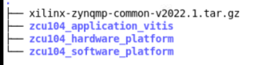
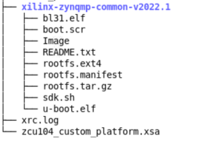

手順 2: Vitis ソフトウェア プラットフォームの作成¶
この手順では、Linux オペレーション システムを動作する Vitis プラットフォームを作成します。Vitis プラットフォームは、いくつかのソフトウェア コンポーネントを必要とし、事前に準備する必要があります。簡単に評価できるようにするため共通ソフトウェア イメージが提供されています。そこで、クイックスタート用に共通イメージを利用します。DTB ファイルは、プラットフォームによってデバイスのペリフェラルが異なるため、共通のイメージ パッケージには用意されていません。そこで、createdts コマンドを使用して、プラットフォーム用のデバイス ツリー ファイルを生成することにします。また、 カーネルや rootfs などのシステム イメージをカスタマイズする必要がある場合は、PetaLinux のカスタマイズを参照してください。次は、プラットフォームに必要なソフトウェア コンポーネントとその場所です。
| コンポーネント | 従来のパスまたはファイル名 | 内容 | 場所 |
|---|---|---|---|
| BOOT.BIN 内のブートコンポーネント | boot/fsbl.elf | FSBL (第 1 段階ブートローダー) | プラットフォームの作成と共に生成 |
| BOOT.BIN 内のブートコンポーネント | boot/pmufw.elf | チップ内部の電源やセキュリティ関連の管理 | プラットフォームの作成と共に生成 |
| BOOT.BIN 内のブートコンポーネント | boot/bl31.elf | Arm トラステッド ファームウェア/セキュア モニター | 共通イメージから抽出 |
| BOOT.BIN 内のブートコンポーネント | boot/u-boot.elf | 第 2 段階のブートローダー | 共通イメージから抽出 |
| BOOT.BIN 内のブートコンポーネント | boot/system.dtb | デバイス ツリー情報ファイル | createdts コマンドで生成 |
| SD カードの FAT32 パーティションのブート コンポーネント | sd_dir/boot.scr | SD カードの FAT32 パーティションに保存する U-Boot コンフィギュレーション ファイル | 共通イメージから抽出 |
| Linux ソフトウェア コンポーネント | sw_comp/Image | Linux カーネル イメージ | 共通イメージから抽出 |
| Linux ソフトウェア コンポーネント | sw_comp/rootfs.ext4 | Linux ファイル システム | 共通イメージから抽出 |
| Linux SDK | sysroot | クロス コンパイルとヘッダー ファイル | 共通イメージから抽出 |
ほとんどのコンポーネントは共通イメージ パッケージから抽出されるため、まず共通イメージを用意します。
共通イメージの準備¶
ザイリンクス ウェブサイトのダウンロード ページから共通イメージをダウンロードし、手順 1 で作成した WorkSpace フォルダーに移動し、次のようにこのフォルダーにイメージ パッケージを保存します。
cd WorkSpace tree -L 1 # to see the directory hierarchy

共通イメージを抽出します。
zcu104_software_platform というフォルダーを作成し、この手順 2 の作業内容を保存します。これから実行する操作やファイルは、このフォルダーに保存されます。
mkdir zcu104_software_platform cd zcu104_software_platform tar xvf ../xilinx-zynqmp-common-v2022.1.tar.gz -C .次のように、xilinx-zynqmp-common-v2022.1 フォルダーには、zcu104_software_platform フォルダーにあるいくつかのコンポーネントが含まれています。

上の図から、ブート ファイル、カーネル イメージ、rootfs、SDK ツールの準備が整っていることがわかります。DTB と第 1 段階のブート関連ファイルは使用できません。Vitis はプラットフォーム作成時に [Generate boot components] のオプションを有効にすることで、FSBL と PMU のファームウェアを生成できるので、Vitis プラットフォームを作成し、[Generate boot components] のオプションを有効にして、FSBL と PMU のファームウェアを生成します。
FSBL と PMU ファームウェアの作成¶
前述のように、FSBL と PMU のファームウェアを取得するため、Vitis プラットフォームを作成します。Vitis IDE と XSCT コマンドを使用し、このプラットフォームを作成することが可能です。ただし、Vitis IDE は入力として XSA ファイルを 1 つしかサポートしません。XSA (hw および hw-emu) を使用する必要がある場合は、XSCT を使用してプラットフォームを作成してください。
Vitis IDE を使用して Vitis プラットフォームを作成する詳細な手順は、ここをクリックしてください。
Vitis IDE を起動します。
Vitis 環境を準備します。
source<Vitis_tool_install_dir>/settings64.shコンソールに
vitis &と入力して Vitis を起動します。ワークスペース ディレクトリとして
zcu104_software_platformフォルダーを選択します。
新しいプラットフォーム プロジェクトを作成します。
[File] → [New] → [Platform Project] をクリックし、プラットフォーム プロジェクトを作成します。
プロジェクト名を入力します。この例の場合、「
zcu104_custom_fsbl」と入力します。[Next] をクリックします。[Platform] ページで次を実行します。
[Browse] ボタンをクリックし、Vivado で生成された XSA ファイルを選択します。この例では
zcu104_custom_platform_hw.xsaです。オペレーティング システムを [standalone] に設定します。
プロセッサを [psu_cortexa53_0] に設定します。
[アーキテクチャ] を [64-bit] に設定します。
FSBL と PMU ファームウェアを自動生成するのが目標なので、[Generate boot components] をオンにします。
[Finish] をクリックします。
Vivado の [Explorer] ビューで zcu104_custom_fsbl プロジェクトを選択し、[Build] ボタンをクリックしてプラットフォームを生成します。
ビルドのあと、SBL や PMU のファームウェアが自動生成されているのが確認できます。
XSCT を使用して Vitis プラットフォームを作成する詳細な手順は、ここをクリックしてください。
XSCT コマンドを使用して Tcl ファイルを作成します。たとえば、xsct_create_pfm.tcl の主な部分を次に示します。
setws . #set OUTPUT platform_repo platform create -name $platform_name \ -desc "A custom platform ZCU104 platform" \ -hw ${xsa_path}/${xsa_name}_hw.xsa \ -hw_emu ${xsa_path}/${xsa_name}_hwemu.xsa \ -fsbl-target psu_cortexa53_0 \ # -out ./${OUTPUT} # standalone domain domain create -name standalone -proc psu_cortexa53_0 -os standalone -arch {64-bit} # Linux domain #domain create -name xrt -proc psu_cortexa53 -os linux -arch {64-bit} -runtime {ocl} -sd-dir {./sd_dir} -bootmode {sd} # domain active xrt #domain config -boot {./boot} #domain config -generate-bif #domain config -qemu-data ./boot platform write platform generate注記: スクリプト内のファイル名とディレクトリ名をプロジェクト ファイルの場所に置き換えてください。
注記: ハードウェア エミュレーションをサポートする必要がない場合は、
platform createコマンドの-hw_emuオプションとその値を省略できます。
platform create コマンドには、次の入力値が必要です。
-name: プラットフォーム名-hw: ハードウェア XSA ファイルのディレクトリ-hw_emu: ハードウェア エミュレーション XSA ファイルのディレクトリ-out: プラットフォームの出力パス。#setwsを使用してワークスペースを指定する場合は、このオプションは不要です。-sd-dir: SD カード イメージの FAT32 パーティションに含めるファイルを含むディレクトリ。-fsbl-target: CPU コアを指定し、対応する FSBL と PMU イメージを生成します。
domain コマンドを使用すると、SD ブート モードでスタンドアロン ドメインまたは Linux ドメインが設定されます。この場合、./sd_dir 内のファイルを使用して、boot.bin を生成するために、SD カード イメージの FAT32 パーティションと ./boot ディレクトリにあるファイルがが作成されます。
これらの値は、変数を実際の値に置き換えてスクリプトに直接渡すか、Tcl スクリプトのヘッダーで定義するか、このスクリプトを呼び出すときに値を XSCT に渡すことができます。
次は、xsct_create_pfm.tcl のすべての内容をハード コードした場合の XSCT の呼び出す例です。
xsct xsct_create_pfm.tclカスタマイズしやすくするため、ref_files ディレクトリにあるサンプルの Makefile および xsct_create_pfm.tcl では、変数を使用してファイル名およびディレクトリの場所を表しています。これらの例を参考に、スクリプトでさらにタスクをプログラム化してください。
この手順では、FSBL と PMU のファームウェアを取得するため、プラットフォームを作成します。最後の手順で、すべてのコンポーネントをプラットフォームに追加します。あと、用意が必要なファイルは DTB ファイルです。
デバイス ツリー ファイルの作成¶
XSCT ツールを使用して、デバイス ツリー ファイルを生成するコマンドを実行します。
cd zcu104_software_platform xsct次のように createdts コマンドを XSCT コンソールで実行します。
createdts -hw ../zcu104_hardware_platform/zcu104_custom_platform.xsa -zocl -platform-name mydevice \ -git-branch xlnx_rel_v2022.1 -board zcu104-revc -compilecreatedts コマンドには、次の入力値が必要です。
-name: プラットフォーム名-hw: パスを含むハードウェア XSA ファイル-git-branch: デバイス ツリーの生成-board: デバイスのボード名。ボード名はこちらで確認できます。/device_tree/data/kernel_dtsi -zocl: zocl ドライバー サポートをイネーブル-compile: デバイス ツリーをコンパイルするオプションを指定
XSCT コンソールには、次の情報が表示されます。この警告メッセージを無視すると、<mydevice/psu_cortexa53_0/device_tree_domain/bsp> にある system.dtb ファイルが取得されるようになります。
pl.dtsi:9.21-32.4: Warning (unit_address_vs_reg): /amba_pl@0: node has a unit name, but no reg property system-top.dts:26.9-29.4: Warning (unit_address_vs_reg): /memory: node has a reg or ranges property, but no unit name zynqmp.dtsi:790.43-794.6: Warning (pci_device_reg): /axi/pcie@fd0e0000/legacy-interrupt-controller: missing PCI reg property pl.dtsi:27.26-31.5: Warning (simple_bus_reg): /amba_pl@0/misc_clk_0: missing or empty reg/ranges property注記: createdts は XSCT コンソールで実行するデバイス ファイル生成用コマンドです。このコマンドは、デバイス ツリー ファイルを生成するのに、いくつかの入力を必要とします。各オプションの詳細は、help コマンドを実行して確認できます。また、XSCT は Vitis のコンソール ツールでもあります。Linux のターミナルで「
xsct」と入力すると、上記の操作に従って起動できます。または、Vitis を起動したあと、**[Xilinx] → [XSCT Console] ** をクリックして XSCT ツールを起動することも可能です。
XSCT コンソールを終了するには、次のコマンドを実行します。
exitデバイス ツリーのアップデート¶
デバイス ツリーは、システムのハードウェア コンポーネントを記述します。createdts コマンドを使用すると、XSA ファイルからハードウェア コンフィギュレーションに応じたデバイス ツリー ファイルを生成できます。対応するハードウェアがないドライバー ノードや、ユーザーが設計したハードウェアなど、XSA で使用できない設定がある場合は、system-user.dtsi にカスタマイズ設定を追加する必要があります。
また、共通イメージ パッケージの U-Boot イメージには、デフォルトの環境変数がありません。したがって、bootargs を手動で更新する必要があります。ref_files ディレクトリの下に、あらかじめ定義された system-user.dtsi ファイルが用意されていて、これを使用して bootargs を追加します。このファイルをデバイス ツリーの BSP ディレクトリにコピーし、このファイルが含まれるように system-top.dts を修正します。次の手順で DTS をアップデートし、再構築します。
zcu104_software_platform ディレクトリに移動します。
cd zcu104_software_platform cp system-user.dtsi mydevice/psu_cortexa53_0/device_tree_domain/bsp/ echo "#include \"system-user.dtsi\"">> mydevice/psu_cortexa53_0/device_tree_domain/bsp/system-top.dtsDTS ファイルを再構築します。
cd zcu104_software_platform/mydevice/psu_cortexa53_0/device_tree_domain/bsp/ gcc -I my_dts -E -nostdinc -undef -D__DTS__ -x assembler-with-cpp -o system.dts system-top.dts #preprocess the dts file because DTC command can not recognize the #include grammar dtc -I dts -O dtb -o system.dtb system.dts # compile the dts<zcu104_software_platform/mydevice/psu_cortexa53_0/device_tree_domain/bsp/>ディレクトリに、アップデートされた system.dtb ファイルがあるので確認します。
この手順を終えると、プラットフォーム作成に必要なコンポーネントがすべて揃います。次に、すべてのコンポーネントをプラットフォームに接続し、構築します。
Vitis プラットフォームの作成¶
まず、コンポーネントを保存するため、pfm、boot、sd_dir sw_comp の 4 つのディレクトリを作成し、これらのディレクトリにファイルをコピーします。
cd WorkSpace/zcu104_software_platform mkdir pfm mkdir pfm/boot mkdir pfm/sd_dir mkdir pfm/sw_comp cp zcu104_platform_fsbl/zynqmp_fsbl/fsbl_a53.elf pfm/boot/fsbl.elf #rename it to fsbl.elf in case of V++ can not find it by name cp zcu104_platform_fsbl/zynqmp_pmufw/pmufw.elf pfm/boot/ cp xilinx-zynqmp-common-v2022.1/bl31.elf pfm/boot/ cp xilinx-zynqmp-common-v2022.1/u-boot.elf pfm/boot/ cp mydevice/psu_cortexa53_0/device_tree_domain/bsp/system.dtb pfm/boot/ cp xilinx-zynqmp-common-v2022.1/boot.scr pfm/sd_dir/ cp mydevice/psu_cortexa53_0/device_tree_domain/bsp/system.dtb pfm/sd_dir/ cp xilinx-zynqmp-common-v2022.1/rootfs.ext4 pfm/sw_comp cp xilinx-zynqmp-common-v2022.1/Image pfm/sw_comp
注記: boot ディレクトリにある fsbl_a53.elf、pmufw.elf、bl31.elf、u-boot.elf, system.dtb は BOOT.BIN イメージのソースです。sd_dir にある Boot.src と system.dtb は U-Boot の初期化および Linux 起動用で、V++ パッケージ ツールで FAT32 パーティションにパッケージされます。イメージと rootfs.ext4 は Linux カーネルとルート ファイルシステムで、V++ ツールで SD.IMG にパッケージされます。
sysroot をインストール
共通イメージを抽出したディレクトリ <WorkSpace/zcu104_software_platform/xilinx-zynqmp-common-v2022.1/> へ移動します。
「./sdk.sh」と入力し、
PetaLinux SDK をインストールします。 -dオプションを使用して、出力ディレクトリへの完全パス名を指定します (これは例で、< . > は現在のディレクトリを意味します)。注記: このコマンドを実行する際、環境変数 LD_LIBRARY_PATH は設定しないでください。
Vitis プラットフォームの作成
今回は IDE を使用して Vitis プラットフォームを作成します。XSCT を使用してプラットフォームを作成する必要がある場合は、XSCT を使用した Vitis プラットフォームの作成を参照してください。
手順 2 で使用していた Vitis ワークスペースを開きます。
[File] → [New] → [Platform Project] をクリックし、プラットフォーム プロジェクトを作成します。
プロジェクト名を入力します。この例の場合、「
zcu104_custom」と入力します。[Next] をクリックします。[Platform] ページで次を実行します。
[Browse] ボタンをクリックし、Vivado で生成された XSA ファイルを選択します。この例では
zcu104_custom_platform_hw.xsaです。オペレーティング システムを [linux] に設定します。
プロセッサを [psu_cortexa53] に設定します。
アーキテクチャを [64-bit] に設定します。
FSBL と PMU が既にあるので、[Generate boot components] のチェック ボックスをオフにします。
[Finish] をクリックします。
[Platform Settings] ビューでソフトウェア設定を指定します。
[linux on psu_cortexa53] ドメインを選択し、[Browse] ボタンを使用して次のようにファイルおよびディレクトリを選択します。
[Bif file]: ドロップダウン アイコンをクリックして、[Generate BIF] を選択します。
注記:
<>内のファイル名はプレースホルダーです。Vitis は、プラットフォームをパッケージするときに、プレースホルダーをプラットフォームへの相対パスに置き換えます。最終的なアプリケーションのビルド時に実行される v++ パッケージャーは、イメージをパッケージするときに、この相対パスを完全パスに展開します。ファイル名プレースホルダーは、boot コンポーネント ディレクトリ内のファイルを指定します。boot ディレクトリ内のファイル名は、BIF ファイル内のプレースホルダーと同じである必要があります。<bitstream>は、予約済みのキーワードです。v++ パッケージャーは、これを最終的なシステム BIT ファイルに置き換えます。[Boot Components Directory]: zcu104_software_platform/pfm/boot を選択し、[OK] をクリックします。
[FAT32 Partition Directory]: zcu104_software_platform/pfm/sd_dir を選択し、[OK] をクリックします。
QEMU Data: zcu104_software_platform/pfm/boot ディレクトリを指定して [OK] をクリックします。

注記: QEMU の DATA をブート コンポーネント ディレクトリに設定すると、エミュレーションを実行するときの Linux 起動時にブート コンポーネントを検出しやすくなります。
注記: QEMU 設定が追加されている場合は、qemu_args.txt を適宜アップデートしてください。
Vivado の [Explorer] ビューで zcu102_min プロジェクトを選択し、[Build] ボタンをクリックしてプラットフォームを構築します。

注記: 生成されたプラットフォームがエクスポート ディレクトリに保存されます。FSBL と PMU の再構築に必要な場合は、BSP とソース ファイルも提供され、プラットフォームと関連付けられます。プラットフォームがアプリケーション開発に使用できるようになりました。

このプラットフォームと同じワークスペースで Vitis アプリケーションを作成した場合は、[New Platform Project] ウィザードの [Platform] ページでこのプラットフォームを選択できます。このプラットフォームを別のワークスペースで再利用するには、Vitis GUI を起動する前にこのパスを PLATFORM_REPO_PATHS 環境変数に追加するか、Vitis GUI のプラットフォーム選択ページで [Add] ボタンをクリックしてパスを追加します。
ファスト トラック¶
Vitis プラットフォームを作成するスクリプトが提供されています。これらのスクリプトを使用するには、次の手順を実行します。
ビルドを実行します。
注記: ザイリンクス ウェブサイトのダウンロード ページから共通イメージをダウンロードし、そのイメージへのパスを次のコマンドに入力してください。
# cd to the step directory, e.g. cd step2_pfm make all COMMON_IMAGE_PATH=<path/to/common_image/>
生成されたファイルをクリーンアップするには、次を実行します。
make clean